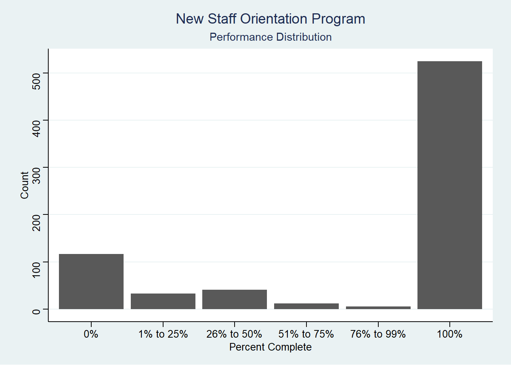

Overall, the first year of the program has been a success, with an overall mean completion rate of 71.5%. The t-test for this outcome indicates that the overall results are significant at p < .001.
t.test(NSO_Complete_Code, mu = 0, alternative = "two.sided")##
## One Sample t-test
##
## data: NSO_Complete_Code
## t = 42.91, df = 733, p-value < 2.2e-16
## alternative hypothesis: true mean is not equal to 0
## 95 percent confidence interval:
## 0.6825345 0.7479832
## sample estimates:
## mean of x
## 0.7152589The analysis of results as measured by how much of the program was completed by particpants shows the breakdowm of performance as:

The analysis of results as measured by how much of the program was completed by particpants is summarized in the following tables.
| Outcome | n Percentage |
|---|---|
| Never Started | 117 (16.0%) |
| Incomplete | 92 (12.5%) |
| Complete | 525 (71.5%) |
A closer look at the Incomplete category shows the breakdown progress as:
| Outcome(Incomplete) | n (Percentage) |
|---|---|
| 1% to 25% | 33 (35.9%) |
| 26% to 50% | 41 (44.6%) |
| 51% to 75% | 12 (13.0%) |
| 76% to 99% | 6 (6.5%) |
The average number of days between assignment of the program to participants and starting the program was 8.15 days.
PSOM_Orientation2 %>% summarize(mean(Days_to_access, na.rm = TRUE))## mean(Days_to_access, na.rm = TRUE)
## 1 8.15235For those who completed the program, the average time to complete was 17.0 days.
PSOM_Orientation2 %>% summarize(mean(Days_to_complete, na.rm = TRUE))## mean(Days_to_complete, na.rm = TRUE)
## 1 17.05524A logistic regression analysis on the identified explanatory variables shows the following results:
summary(glm(NSO_Complete_Code ~ factor(Emp_age_group) +
factor(Emp_Gender) + factor(Exempt_Status) +
factor(Salary_Code) + factor(Personnel_Class) +
factor(SUP_Employee_Type) +
factor(SUP_Learning), family = "binomial", data = PSOM_Orientation2))##
## Call:
## glm(formula = NSO_Complete_Code ~ factor(Emp_age_group) + factor(Emp_Gender) +
## factor(Exempt_Status) + factor(Salary_Code) + factor(Personnel_Class) +
## factor(SUP_Employee_Type) + factor(SUP_Learning), family = "binomial",
## data = PSOM_Orientation2)
##
## Deviance Residuals:
## Min 1Q Median 3Q Max
## -2.0487 -1.4094 0.7449 0.8489 1.5613
##
## Coefficients: (1 not defined because of singularities)
## Estimate Std. Error z value Pr(>|z|)
## (Intercept) -1.16264 1.26825 -0.917 0.3593
## factor(Emp_age_group)25 to 34 0.44494 0.21239 2.095 0.0362 *
## factor(Emp_age_group)35 to 44 0.47118 0.33171 1.420 0.1555
## factor(Emp_age_group)45 to 54 0.50745 0.37267 1.362 0.1733
## factor(Emp_age_group)Over 55 0.59362 0.52977 1.121 0.2625
## factor(Emp_Gender)Male -0.08675 0.17641 -0.492 0.6229
## factor(Exempt_Status)Non-Exempt 0.07074 0.23185 0.305 0.7603
## factor(Salary_Code)$50k to $74k -0.06406 0.24924 -0.257 0.7972
## factor(Salary_Code)$75k to $99k 0.24434 0.39137 0.624 0.5324
## factor(Salary_Code)100k+ -0.58958 0.42809 -1.377 0.1684
## factor(Personnel_Class)SS NA NA NA NA
## factor(SUP_Employee_Type)HS.EMP 2.72325 1.39536 1.952 0.0510 .
## factor(SUP_Employee_Type)UP.FAC 1.81747 1.25890 1.444 0.1488
## factor(SUP_Employee_Type)UP.SRS 15.31110 505.74053 0.030 0.9758
## factor(SUP_Employee_Type)UP.STAF 1.67148 1.24588 1.342 0.1797
## factor(SUP_Learning)1 0.32648 0.25180 1.297 0.1948
## factor(SUP_Learning)2 0.20258 0.24307 0.833 0.4046
## factor(SUP_Learning)3 -15.73657 882.74342 -0.018 0.9858
## ---
## Signif. codes: 0 '***' 0.001 '**' 0.01 '*' 0.05 '.' 0.1 ' ' 1
##
## (Dispersion parameter for binomial family taken to be 1)
##
## Null deviance: 876.95 on 733 degrees of freedom
## Residual deviance: 855.90 on 717 degrees of freedom
## AIC: 889.9
##
## Number of Fisher Scoring iterations: 13The results of this test indicate the only coefficient with significant results (p < .05) was for Employees ages 25 to 34. This means that we are able to say that the predict completion rate for an employee 18-25 years old is 4.6 points lower than that of an employee 25 to 34 years old.
A plot of the means with confidence intervals helps to see the source of this effect. The larger confidence intervals for the higher age categories reflect the increased variability resulting from the smaller number of observations in these categories.
If the program variables, Days_to_complete and Days_to_access are treated as continuous variables, we can plot them to see if any relationship is present. This plot represents the data set after removing outliers (Days_to_complete > 100).
This plot indicates a positive, linear relationship which is confirmed by running a regression analysis. We are 99.9% confident that the relationship between Days_to_complete and Days_to_access is not due to chance. Therefore we reject the null hypothesis that these variables are not equal to zero.
Finally, we can test the hypothesis that the length of time between when the program is assigned and when it is accessed is associated with the likelihood of completion.
summary(lm(Days_to_complete ~ Days_to_access, PSOM_Orientation3))##
## Call:
## lm(formula = Days_to_complete ~ Days_to_access, data = PSOM_Orientation3)
##
## Residuals:
## Min 1Q Median 3Q Max
## -8.784 -6.916 -3.942 3.006 91.058
##
## Coefficients:
## Estimate Std. Error t value Pr(>|t|)
## (Intercept) 6.9159 0.5653 12.23 <2e-16 ***
## Days_to_access 1.0259 0.0472 21.74 <2e-16 ***
## ---
## Signif. codes: 0 '***' 0.001 '**' 0.01 '*' 0.05 '.' 0.1 ' ' 1
##
## Residual standard error: 11.23 on 507 degrees of freedom
## Multiple R-squared: 0.4824, Adjusted R-squared: 0.4813
## F-statistic: 472.4 on 1 and 507 DF, p-value: < 2.2e-16Here too, we observe a significant relationship at the (p < .001) level.